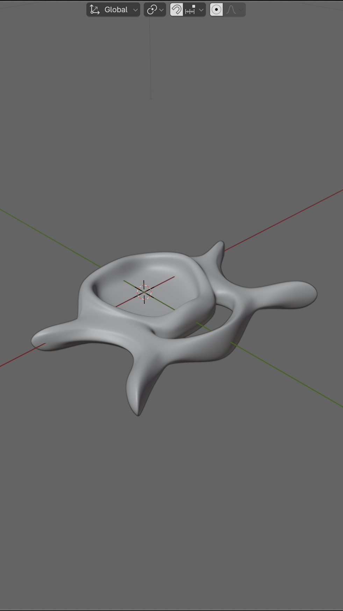
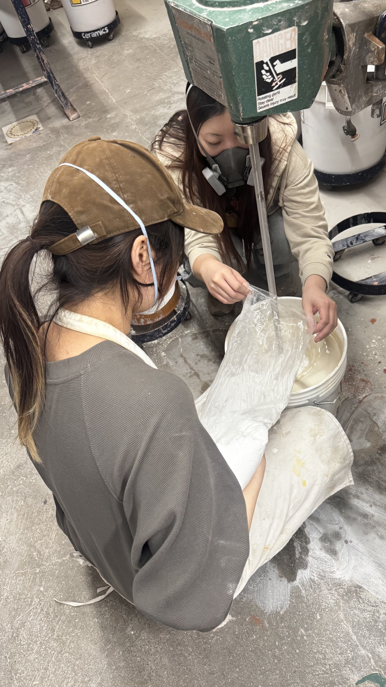
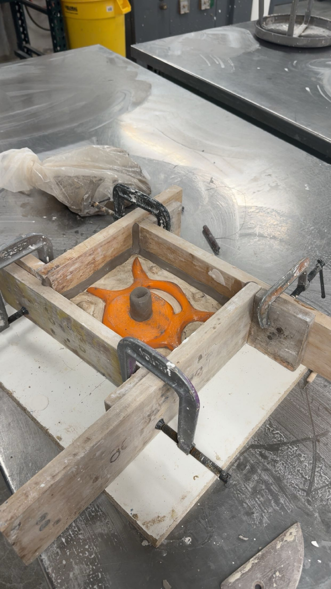
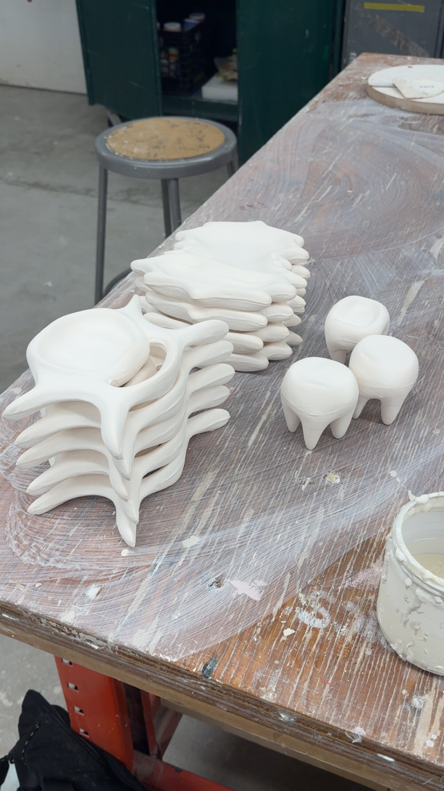

| 00:00:00 AM
ossuary
product research conceptual experimentalEverything the body becomes eventually fits in a container. Ossuary starts there.
Del polvo eres y al polvo volverás. Lo que queda del cuerpo siempre cabe en una vasija. Ossuary empieza ahí.
Ossuary is a ceramic collection of functional objects: ashtrays, jewelry trays, candle holders, and a vase.
The forms draw from the morphology of human bone, spines, ribs, skeletal fragments, sitting at the
intersection of the anatomical and the domestic. The collection is coherent in form and open in finish,
treating glaze as a second layer of research running parallel to the making.
The name came first. An ossuary is a container for the bones of the dead, an ashtray is a container for
what burning leaves behind. These are objects that hold residue in the shape of what the body becomes.
The formal departure point was bone morphology, not anatomical precision. The shapes are intuitive
interpretations, bone-like in feeling and proportion rather than clinical accuracy, and the process
demanded substantial investigation into glaze chemistry, slip casting, mold making, and firing behavior.
Ossuary es una colección cerámica de objetos funcionales: ceniceros, bandejas para joyería, portavelas, y un florero.
Las formas se derivan de la morfología del hueso humano, espinas, costillas, fragmentos esqueléticos,
situados en la intersección de lo anatómico y lo doméstico. La colección es coherente en forma y abierta
en acabado, tratando el esmalte como una segunda capa de investigación paralela al proceso.
El nombre vino primero. Un osario es un contenedor para los huesos de los muertos, un cenicero es un
contenedor para lo que el fuego deja atrás. Estos son objetos que guardan residuo en forma de huesos.
El punto de partida formal fue la morfología ósea, no la precisión anatómica. Las formas son
interpretaciones intuitivas, parecidas al hueso en sensación y proporción más que en exactitud clínica,
y el proceso exigió investigación en química del esmalte, colado en molde, fabricación de moldes y
comportamiento en el horno.




The pieces were digitally modeled in Blender and 3D printed to produce the molds, then cast in clay
and fired. The forms that read as organic, bodily, and handmade were constructed computationally before
they ever became ceramic.
Glaze was treated as its own experimental territory: different recipes, different applications, different
results. Some surfaces are deep black and glossy, reading almost industrial. Others are matte white with
bronze-toned markings that pool and branch like vascular tissue. The green and gold piece carries a
texture closer to mineral than body. The glazes were tests, and the collection shows that.
The spine ashtrays are the most resolved forms. The vase, hand-built rather than cast, stands apart in
both technique and scale, its thorn-covered surface pushing the bone reference toward something rawer.
The ashtrays receive ash, the trays hold small things, the candle holders hold light, the vase holds
stems. They are functional objects that happen to be shaped like the inside of a body.
Las piezas fueron modeladas digitalmente en Blender e impresas en 3D para producir los moldes, luego
vaciadas en arcilla y cocidas. Las formas que se leen como orgánicas, corporales y hechas a mano fueron
construidas computacionalmente antes de convertirse en cerámica.
El esmalte fue tratado como su propio territorio experimental: diferentes recetas, diferentes
aplicaciones, diferentes resultados. Algunas superficies son negro profundo y brillante, casi
industriales. Otras son blanco mate con marcas en tonos bronce que se acumulan y ramifican como tejido
vascular. La pieza verde y dorada tiene una textura más cercana al mineral que al cuerpo. Los esmaltes
fueron pruebas, y la colección lo muestra.
Los ceniceros con forma de columna vertebral son las formas más resueltas. El florero, construido a mano
en lugar de vaciado, se distingue tanto en técnica como en escala, con su superficie cubierta de espinas
empujando la referencia ósea hacia algo más crudo.
Los ceniceros reciben ceniza, las bandejas guardan cosas pequeñas, los portavelas sostienen luz, el
florero sostiene tallos. Son objetos funcionales que resultan estar formados como el interior de un cuerpo.